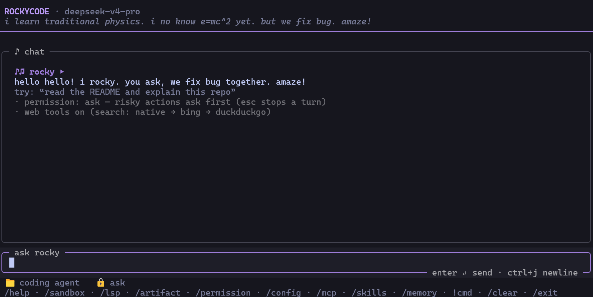

Rocky 是一个开源 AI 编程代理，帮助你在终端、IDE 或桌面端编写代码。它读代码、改代码、跑测试，实时流式展示推理过程。事情顺利时他说 amaze!，困惑时说 i no know! i learn!
Rocky 是 100% 开源的 AI 编程代理，采用 MIT 协议。从终端出发，为热爱命令行的开发者而生。
Rocky 不存储任何代码或上下文数据。所有记忆以纯 Markdown 文件存储在你本地 .rockycode/memory/，你拥有完全控制权。
了解更多关于隐私。
uv sync，配置 .env 中的 API Key，然后 uv run rockycode chat 即可启动。